Modelagem de Dados
O que é Modelagem de Dados
A modelagem de dados é o processo de de criação de uma representação visual de um sistema com
dados, informações e relações entre dados.
Essa representação ajuda a organizar, estruturar e documentar os dados de maneira que
facilite a compreensão e o uso
eficaz em aplicações e bancos de dados.
Como Identificar Entidades
As entidades no banco de dados são uma forma de visualisação de dados através de um sistema de linhas e colunas.
Para isso, precisamos primeiro identificar os dados que compõem essas entidades.
Exemplo: Em um sistema de biblioteca, podemos ter os dados como "título" e "autor" em uma entidade "livro" e então colocamos essas
informações em forma de tabela para criar a entidade.
Como Identificar Atributos
Os atributos são caracteristicas de uma entidade.Para identifica-los, basta analisarmos as propriedades das mesmas. Exemplo: A entidade "Aluno" tem como atributo o "número da chamada".
Como Relacionar Entidades
Os relacionamentos(cardinalidade) servem para ligar uma entidade à outra, permitindo que os dados de várias entidades sejam combinados e consultados de forma eficiente Para relacionar é bem simples: basta identificar os dados e chaves prímarias (id) de duas entidades e entrelaçar essas informações usando uma chave secundária, elemento esse que serve justamente para conectar duas entidades
Modelo Entidade Relacionamento
Feito isso, é possivel a criação de um MER (Modelo Entidade Relacionamento) que consiste em uma forma de visualização de elementos do banco de dados (entidade, atributo e relacionamento). Este tipo de modelo é vital para uma boa organização e consistência no bd, permitindo o entendimento de como os dados se relacionam entre si
Diagrama Entidade Relacionamento
Outro ponto importante para criar uma boa modelagem é o DER (Diagrama Entidade Relacionamento) um diagrama visual para representar o MER. Para cria-lo, representamos as entidades nas extremidades da página, com a forma de retângulos e seus nomes no meio deles. Depois, colocamos os atributos em forma de bolinhas conectadas à linhas com as entidades. Se a bolinha estiver pintada, significa que ela é um atributo identificador, algo único em cada entidade (id). Por fim, os relacionamentos são representados em forma de losango conectado atraves de linhas com as entidades, conforme o exemplo abaixo: 
Pronto para testar
seu conhecimento?
Aqui vai um pequeno questionário para avaliar seu conhecimento! Não se preocupe pois a questão serve apenas para testar seu conhecimento sobre este módulo!
A modelagem de dados segue uma série de etapas para garantir que o sistema seja bem estruturado e eficiente. Qual das opções descreve corretamente uma etapa essencial desse processo?